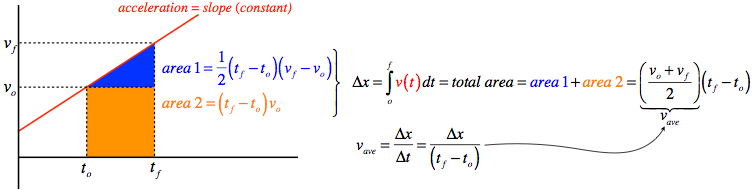
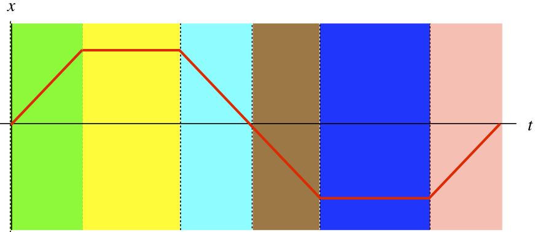
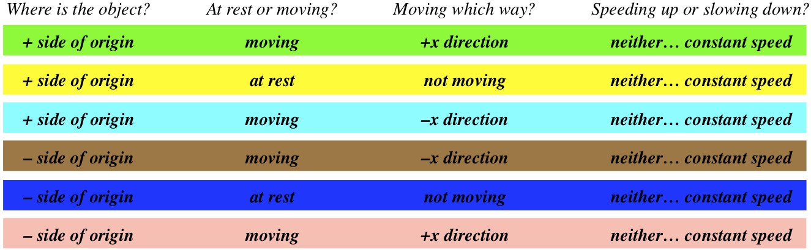
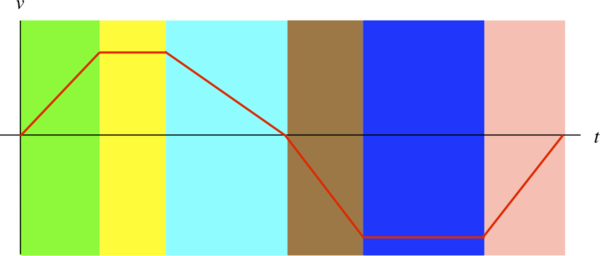
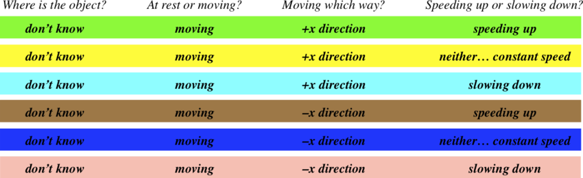
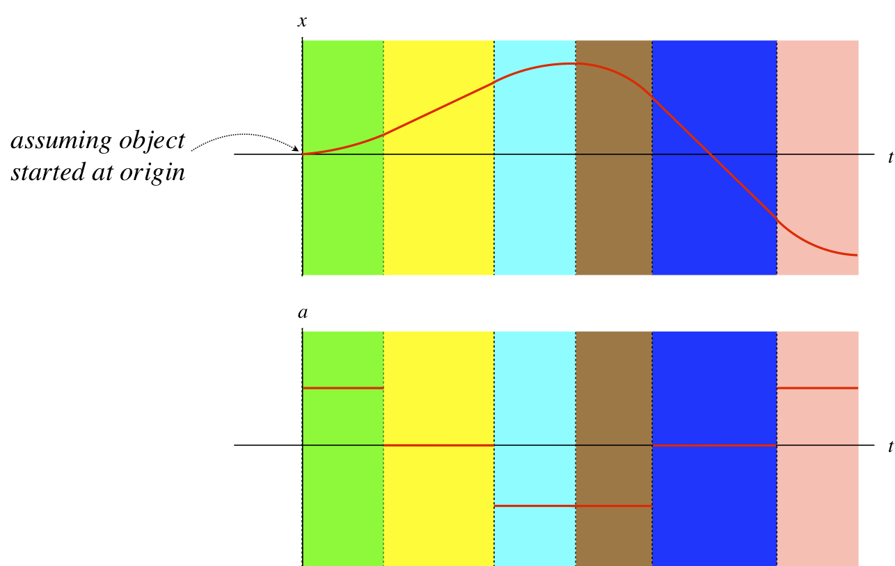

There is nothing more fundamental in the study of physics than motion. We will bring a lot of mathematics to discuss this subject, but we are going to start as simply as possible – with motion of a single particle that remains on a straight line. This simplifies our task in more ways than one:
By restricting ourselves to single particles, we don’t have to worry about the complicated motions of systems of particles, where each of the particles can move differently than the others.
By keeping the motion along a straight line, there are only two directions involved, and these directions can be characterized simply as "positive" and "negative" – there is no need for unit vectors.
Displacement
In order for motion to occur for a body, its position obviously must change from one instant in time to another. We will refer to the coordinate position of the straight line on which the object moves as x(t). A change in this position we call the displacement, and refer to it as a change in position:
displacement = Δx ≡ xf − xi
Notice that if the final position is a smaller number than the initial position, then the object has a negative displacement. Eventually we will treat displacement as a vector, but for our straight-line motion, the sign of the value provides all the information we need about the direction.
Average Velocity
Thankfully, there is more to motion than just displacement. We will generally also be interested in how fast that displacement occurs. We therefore define a rate called the average velocity thus:
$$\text{average velocity} = v_{ave} \equiv \dfrac{\Delta x}{\Delta t} = \dfrac{x_f-x_i}{t_f-t_i}$$
Since we know displacement is a vector (and in our current simple 1-dimensional model it can only have two directions), then average velocity must be a vector as well.
Instantaneous Velocity
It is usually not informative enough to just talk about the starts and the ends? That is, how do we define a velocity at a single moment in time – the instantaneous velocity? Well, we know the answer to this from elementary calculus. We start with our idea of average velocity, and just shrink the time span down very small, until it vanishes:
$$\text{instantaneous velocity} = v = \lim_{\Delta t \rightarrow 0} \dfrac{\Delta x}{\Delta t} = \dfrac{dx}{dt}$$
Average and Instantaneous Acceleration
In simple rectilinear motions, we take our discussion of motion to one level more – we consider that things might speed up or slow down. Just as we defined average velocity in terms of before and after positions, we also define average acceleration in terms of before and after (instantaneous) velocities:
$$\text{average acceleration} = a_{ave} = \dfrac{\Delta v}{\Delta t} = \dfrac{v_f-v_o}{t_f-t_o}$$
And, as before, we use calculus to extend this notion of average acceleration to instantaneous acceleration, which we describe as the amount that our object is speeding up or slowing down at a single moment in time:
$$\begin{aligned}
\text{instantaneous acceleration} = a = \lim_{\Delta t \rightarrow 0} \dfrac{\Delta v}{\Delta t} &= \dfrac{dv}{dt} \\[5pt] &= \dfrac{d^2x}{dt^2}\end{aligned}$$
Now that we have the basics covered, let’s go over some of the important analytical parts.
It is important to note that we are not yet dealing with causes for these motions, but only the motions themselves, hence, we call the topic of our current study kinematics. We will mostly only deal with constant accelerations, and since instantaneous acceleration is the derivative of velocity, it is not difficult to integrate(compute the anti-derivative) it to get the instantaneous velocity as a function of time:
$$\left. \begin{array}{l} a = \dfrac{dv}{dt}\;\;\; \Rightarrow \;\;\;v\left( t \right) = \int {a\;dt} = at + const \;\\ const = v\left( 0 \right) \equiv {v_i} \end{array} \right\}\;\;\;v\left( t \right) = at + {v_i}$$
The constant of integration is found by plugging t = 0 into the above equation, which results in the velocity of the object at the starting time, which is typically designated as vi.
We can perform the exact steps again to obtain the equation of motion for position as a function of time, since we know how it relates to the instantaneous velocity:
$$\left. \begin{array}{l} v = \dfrac{dx}{dt}\;\;\; \Rightarrow \;\;\;x\left( t \right) = \int {vdt} = \int {\left( {at + {v_i}} \right)dt} = \frac{1}{2}a{t^2} + {v_i}t + const \;\\ const = x\left( 0 \right) \equiv {x_i} \end{array} \right\}\;\;\;x\left( t \right) = \frac{1}{2}a{t^2} + {v_i}t + {x_i}$$
Bear in mind that if we have all the details of this last equation, we can obtain the velocity equation above simply by taking a derivative. We cannot go in the opposite direction without also obtaining the starting position.
Let’s take a look at the common numbers we can encounter in a constant-acceleration situation:
independent variable: t
dependent variables: x, v
constants of the motion: xi, vi, a (acceleration is constant by assumption)
The most common useful re-combining of these variables involves eliminating time from the two equations, since you may be given velocities and positions. The algebra is straightforward:
$$\left. \begin{array}{l} v_f = at + v_i \;\Rightarrow \;t = \dfrac{v_f - v_i}{a}\\ x_f - x_i = \frac{1}{2}a{t^2} + {v_i}t \end{array} \right\} \;\;\; x_f - x_i = \frac{1}{2}a \left( \dfrac{v_f - v_i}{a} \right)^2 + v_i \left( \dfrac{v_f - v_i}{a} \right) \;\;\;\Rightarrow \;\;\; 2a \left( x_f - x_i \right) = {v_f}^2 - {v_i}^2$$
You can think of this equation as the “before/after” equation, because it deals only with starting and ending positions and velocities, and has eliminated time as an input variable.
$${v_{ave}} = \dfrac{x_f - x_i}{t} = \dfrac{x \left( t \right) - x_i}{t}\;\;\;\Rightarrow \;\;\; x \left( t \right) = v_{ave}t + x_i$$
$${v_{ave}} = \dfrac{x_f - x_i}{t} = \dfrac{\frac{1}{2}a{t^2} + {v_i}t}{t} = \frac{1}{2}at + v_i = \frac{1}{2}\left( v_f - v_i \right) + v_i \;\;\; \Rightarrow \;\;\; v_{ave} = \dfrac{v_i + v_f}{2}$$
$$x \left( t \right) = (\dfrac{v_i + v_f}{2})t + x_i$$
Assuming air resistance has a small effect (remember, we are devising a simplified model here), then it turns out (as shown by Galileo dropping stones from the Tower of Pisa, and more dramatically in the demonstration) that objects all accelerate at the same constant rate as they fall to Earth. This rate of acceleration is commonly given the symbol g, and it has the value:
acceleration due to gravity near the surface of the earth = g = 9.8m/s2
This acceleration is of course always directed downward, and depending on our choice of coordinate system & reference frames, this can be either positive or negative, that is a = ± g. Once the coordinate system is selected, the sign for a stays the same no matter which way the object is moving.
If the positive direction is chosen to be upward, and the object is moving upward, then its velocity is positive and the negative value of a leads to a slowing of the object’s motion. If it is moving down, then its velocity is negative, and the negative acceleration leads to the velocity becoming more negative (i.e. it is speeding up).
Graphs of Motion
We conclude our discussion of straight-line motion by taking on the topic of representing motion with graphs. These graphs represent what is happening to the various dependent variables (x, v, and a) over time. There are three goals here:
To interpret a graph in terms of the physical motion of the object it represents.
To sketch a graph that represents the physical motion of an object, given a description of that motion.
To sketch a graph of one or two dependent variables based on the graph of another dependent variable.
These are not always easy tasks to perform, for two main reasons: First, our first instinct when we see a graph is to interpret it as a picture, rather than a plot of a quantity vs. time. The second problem (and this persists throughout the study of physics) is the tendency to confuse the change of a quantity for the value of that quantity. More precisely, we tend to lose sight of the fact that a variable’s value at an instant and its rate of change are quite independent of each other.
Here are some of the few important points we need to understand during while interpreting and plotting graphs.
Which side of the origin is it on?
The position at any given time is the value on the vertical axis for the x vs. t graph. Where we run into trouble is thinking that we might have some idea of how to answer this question for the velocity and acceleration graphs. Those graphs only give us information about the object’s changing position and changing speed, respectively, not where the object is at any given time. If we are separately given where the object is at some point in time (for instance, at t = 0), then we can determine its position at other times. One way to think of this is that the velocity graph gives us the shape of the position graph, but that shape could be located anywhere up-and-down the vertical axis.
Is the object at rest, or is it moving?
Although this is a property of velocity, we can answer it using the x vs. t graph. Mathematically, we know that the velocity is the slope of the position graph, so since "at rest" means zero velocity, the object is at rest when the tangent line to the x vs. t graph has zero slope. But we should strive to look at this physically as well. Obviously an object that is moving is one whose position is changing, so if the x value is changing, the object is moving. If we are given a v vs. t graph, we have to be careful not to use the same criterion as we did for the x vs. t graph. Instead, whether the object is moving or not is a simple matter of whether or not the value of v is zero. If we have the acceleration graph, then integrating it to get the velocity graph leaves an unknown constant (vi). We know the shape of the v vs. t graph, but not where it is located up-and-down the vertical axis. This means that with just the acceleration graph we cannot know where the velocity graph crosses the horizontal axis, and therefore have no idea where the object is coming to rest.
Which way is the object moving?
The direction of motion of the object can also be obtained from both the position and velocity graphs. From the position graph, we know that the sign of the slope is the sign of the velocity (which is the direction of motion). On the velocity graph, we simply need to determine if the value of the velocity is positive or negative (i.e. is the graph below or above the horizontal axis). A common mistake is to confuse these two things. For example, the position graph being below the horizontal axis does not mean the object is moving in the − x direction, and a positive slope of the velocity graph does not mean that the object is moving in the + x direction. Once again, the acceleration graph does not – by itself – provide information about the direction of the object’s motion, because the question of above-or-below the horizontal axis for the velocity graph cannot be answered when the acceleration graph only gives the v vs. t graph’s shape.
Is the object speeding-up or slowing down?
This is probably the trickiest question of all, because it doesn’t have a direct correlation to the value or slope of any of the graphs. To make this determination, you actually need two pieces of information – the directions of both the velocity and the acceleration. This is because if the object is accelerating in the same direction that it is moving, then it is speeding up, and if it is accelerating in the opposite direction as the direction of motion, then it is slowing down. We therefore cannot determine the answer to this question from the acceleration graph alone, because that graph by itself does not provide the direction of motion (the function v(t) associated with this acceleration could be above or below the horizontal axis anywhere). We can determine speeding-up/slowing-down from the v vs. t graph, by comparing the slope of the graph with the value of the graph at the same point. If they have the same sign, then the acceleration is in the same direction as the velocity, and it is speeding up. If they are opposite, then it is slowing down. But there is a simpler, physical way to make this determination: If the v vs. t graph at the point in question is heading closer to the horizontal axis, then its velocity is heading toward zero, and it is slowing down, while if it is heading away, it is speeding up. Naturally horizontal parts of the the v vs. t graph represent motion in which the object is neither speeding up nor slowing down.
Making this determination from the x vs. t graph is even more challenging. Clearly if a section of the x vs. t graph is a straight line, then the velocity is constant, and the object is neither speeding up nor slowing down. So what about when x(t) is curved? The trick to use here is to determine if continuing this curve will eventually cause the graph to go horizontal (i.e. reach a max or a min), or vertical. If it is the former, then the object is slowing (a horizontal slope is stationary), and the latter is speeding up. Note that both of these can occur for either concave or convex curves, for positive or negative slopes, and above or below the horizontal axis.
We have already seen that we can derive equations of motion for v(t) and x(t) by integrating their derivatives, and we know that integrals of functions equal the areas under the curves those functions represent, so we can use this knowledge to tie together these two facts. If we are given the graph of a motion, we can compute the area under the curve between the starting and ending points to get a definite integral, and therefore the change between the starting and ending values. So for example, if we again assume constant acceleration, a velocity-vs-time graph is a straight line whose slope is the acceleration. The area under this line from the starting time to the ending time will be the displacement between these two times (note: we still don’t know the positions for these times, only the change in positions). This actually demonstrates the average velocity relation we found earlier:

Notice that it is vital that the acceleration is constant for this formula for average velocity to come out, because the area under the curve involves the area of a triangle that requires a straight line on top. Of course, the average velocity could accidentally come out to equal the arithmetic average of the starting and ending velocities when the acceleration is not constant (if the area under the curved graph happens to equal the area under the straight line graph between the same two points), but we cannot rely on such coincidences when solving problems. Moreover, this means that we cannot assume the converse – if the arithmetic mean of a starting and ending velocity equals the average velocity, we cannot conclude that the acceleration was constant over that time interval.
For the position vs. time graph of an object moving in one dimension given below answer each of the four questions given below for every segment of time indicated by the different colors: (1) Where is the object? (2) At rest or moving? (3) Moving which way? (4) Speeding up or slowing down?

Solution

For the velocity vs. time graph of an object moving in one dimension given below:

Answer each of the four questions given above for every segment of time indicated by the different colors.
Solution

Sketch the position vs. time and acceleration vs. time graphs associated with this same motion. Assume that the object was at the origin at time t = 0
Solution
